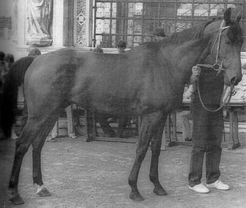

|
BAIARDO IV
Corsi 8, vinti 1
anno di nascita: 1977
morto nel 1986
vi fu un altro cavallo con lo stesso nome che corse nel 1969 (Baiardo I)
Sempre protagonista negli 8
Palii corsi, riuscì a vincere solo in un'occasione e in un lotto di cavalli che lo favorivano, per forza fisica
a adattabilità. Cambiò due modi di allenamento: da quello di Camillo, quando rifiutava continuamente i
canapi, a quello di Bastiano, quando raggiunse la maturazione piazzaiola. Nel Palio del suo debutto,
nell'Onda con Marasma, partito per ultimo, al primo Casato, con una traiettoria molto bassa, fu l'artefice del
"patatrac" cha segnò la svolta di quel Palio. Nel luglio 1982, con Camillo (l'unico che lo montò per
tratta, prova e Palio) nella Tartuca, si rese "responsabile" di un clamoroso cambio di posto e di una corsa
da cui in molti si aspettavano un risultato più consistente. Scartato nall'agosto 1982, a causa dei continui
veti del Mossiere Ricci (l'irrequietezza tra i canapi di Baiardo non permetteva un allineamanto veloce), il
soggetto fu il protagonista principale del luglio 1983, quando passava sotto il canape e lasciava Ricciolino
al di là dalla "fune", non curandosi né delle nerbate, né delle continue "mosse", che furono tra la cause del
rinvio dal Palio al giorno successivo. Passato sotto le cure di Bastiano, il cavallo troverà tutta la sua maturità,
tanto che nel luglio 1984 vincse "tranquillamente" il Palio cha lo consacrò big, facendo alzare ad
Aceto nell'Oca il suo 12° nerbo. Il 1985 lo vide "stanco" nella Giraffa con il Casula di rincorsa, e attivissimo
con Aceto nel Bruco nel successivo agosto, dove, partito abbondantemente per ultimo, in una miracolosa
rincorsa, riuscì ad assere secondo all'ultimo passaggio a S.Martino, senza però recuperare la prima posizione.
Atteso nel 1986, non venne saggiamente interpretato dal Pes nel Montone, mentre Cianchino si
trovò il canape di D’Inzeo sempre teso nello straordinario. Con un altro Palio scosso concluse una
"carriera" di Piazza che non è stata, in certi casi, ben interpretata dai rispetti fantini. Probabilmente un
cavallo non facile, ma di una potenza tale che gli avrebbe consentito un maggior numero di successi;
l`unico problema riguardava i canapi, ma gli accorgimenti (come i tappi nelle orecchie) a l'esperienza di
alcuni fantini erano riusciti a superare anche questa difficoltà. Morirà nall'autunno dal 1986 nella stalla di
Vescona a causa di un attorcigliamento dell'intestino, proprio quando aveva cambiato padrone.

ALTRI CAPITOLI INERENTI A QUESTO ARGOMENTO:
Proprietari dei cavalli vittoriosi
I cavalli dal 1945 al 1999
I cappotti dei cavalli
I cavalli vincenti del Novecento
I cavalli vittoriosi all'esordio
Per tornare all'indice delle foto
|